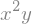
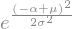
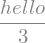
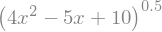
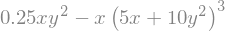

Introduction to Sympy and LaTeX¶
1 Intro to sympy, part 1¶
# import the sympy package
import sympy as sym
# optional setup for "fancy" printing (used later)
# sym.init_printing()
# import additional functions for nice printing
from IPython.display import display, Math
# create symbolic variables
x,y,z = sym.symbols('x,y,z')
x
\[\displaystyle x\]
# x doesn't have a value; it's just a symbol
x + 4
\[\displaystyle x + 4\]
# for "fancy" printing (note: you need to run this line only once)
sym.init_printing()
x + 4
# more fun...
display( x**y )
display( y/z )
# let's compare with numpy
import numpy as np
display(sym.sqrt(2)) # square root in symbolic math
display(np.sqrt(2)) # square root in numeric/precision math
1.1 Exercises¶
# 1)
display(y*x**2)
# 2)
display( sym.sqrt(4)*x )
# 3)
display( sym.sqrt(x)*sym.sqrt(x) )

2 Intro to Latex¶
# basic latex coding is easy:
display(Math('4+5=7'))
\[\displaystyle 4+5=7\]
# special characters are indicated using \\
display(Math('\\sigma = \\mu \\times \\sqrt{5}'))
# outside Python, use one \
display(Math('\\sigma = \\mu \times \\sqrt{5}'))
# subscripts and superscripts
display(Math('x_n + y^m - z^{m+n}'))
# fractions
display(Math('\\frac{1+x}{2e^{\pi}}'))
# right-click to change properties
\[\displaystyle \sigma = \mu \times \sqrt{5}\]
\[\displaystyle \sigma = \mu imes \sqrt{5}\]
\[\displaystyle x_n + y^m - z^{m+n}\]
\[\displaystyle \frac{1+x}{2e^{\pi}}\]
# regular text requires a special tag
f = 4
display(Math('Set x equal to %g'%f))
display(Math('\\text{Set x equal to %g}'%f))
\[\displaystyle Set x equal to 4\]
\[\displaystyle \text{Set x equal to 4}\]
2.1 Latex code in a markdown cell¶
Note: this is not for evaluating variables or other numerical code!
\[ \frac{1+\sqrt{2x}}{e^{i\pi}} \]
2.2 Exercises!¶
# 1)
display(Math('4x+5y-8z=17'))
# 2)
display(Math('\\sin(2\\pi f t+\\theta)'))
# 3)
display(Math('e=mc^2'))
# 4)
display(Math('\\frac{4+5x^2}{(1+x)(1-x)}'))
\[\displaystyle 4x+5y-8z=17\]
\[\displaystyle \sin(2\pi f t+\theta)\]
\[\displaystyle e=mc^2\]
\[\displaystyle \frac{4+5x^2}{(1+x)(1-x)}\]
3 Intro to sympy, part 2¶
# using Greek characters as variable names
mu,alpha,sigma = sym.symbols('mu,alpha,sigma')
expr = sym.exp( (mu-alpha)**2/ (2*sigma**2) )
display(expr)

# can also use longer and more informative variable names
hello = sym.symbols('hello')
hello/3

# substituting numbers for variables
# don't forget to define variables before using them!
display(x+4)
(x+4).subs(x,3)
# substituting multiple variables
x,y = sym.symbols('x,y') # can create multiple variables in one line
expr = x+y+5
# substituting one variable
print( expr.subs(x,5) )
# substituting multiple variables
print( expr.subs({x:5,y:4}) )
y + 10
14
# using sympy to print latex code
expr = 3/x
print( sym.latex(expr) )
# notice:
print( sym.latex(3/4) )
print( sym.latex('3/4') )
# but
print( sym.latex(sym.sympify('3/4')) )
\frac{3}{x}
0.75
3/4
\frac{3}{4}
3.1 Exercise!¶
for i in range(-2,3):
ans = (x+4).subs(x,i**2)
display(Math('\\text{With }x=%g:\; x^2+4 \\quad \\Rightarrow \\quad %g^2+4 =%g' %(i,i,ans)))
\[\displaystyle \text{With }x=-2:\; x^2+4 \quad \Rightarrow \quad -2^2+4 =8\]
\[\displaystyle \text{With }x=-1:\; x^2+4 \quad \Rightarrow \quad -1^2+4 =5\]
\[\displaystyle \text{With }x=0:\; x^2+4 \quad \Rightarrow \quad 0^2+4 =4\]
\[\displaystyle \text{With }x=1:\; x^2+4 \quad \Rightarrow \quad 1^2+4 =5\]
\[\displaystyle \text{With }x=2:\; x^2+4 \quad \Rightarrow \quad 2^2+4 =8\]
4 Example: Use sympy to understand the law of exponents¶
x,y,z = sym.symbols('x,y,z')
ex = x**y * x**z
display(ex)
display( sym.simplify(ex) )
expr1 = x**y * x**z
expr2 = x**y / x**z
expr3 = x**y * y**z
display(Math('%s = %s' %( sym.latex(expr1),sym.latex(sym.simplify(expr1)) ) ))
display(Math('%s = %s' %( sym.latex(expr2),sym.latex(sym.simplify(expr2)) ) ))
display(Math('%s = %s' %( sym.latex(expr3),sym.latex(sym.simplify(expr3)) ) ))
\[\displaystyle x^{y} x^{z} = x^{y + z}\]
\[\displaystyle x^{y} x^{- z} = x^{y - z}\]
\[\displaystyle x^{y} y^{z} = x^{y} y^{z}\]
# using sym.Eq
sym.Eq(4, 2+2)

display(sym.Eq(x-3, 4))
# using variables
lhs = x-3
rhs = x
display(sym.Eq(lhs, rhs))

lhs = x-3
rhs = x+4 # -7
display(sym.Eq(lhs, rhs))
# or
sym.Eq(lhs-rhs, 0)
display(sym.Eq(expr1, expr1))
# but...
display(sym.Eq(expr1 - sym.simplify(expr1), 0))
display(sym.Eq(sym.expand(expr1-sym.simplify(expr1)), 0))

# btw, there's also a powsimp function:
display( sym.powsimp(expr1) )
# and its converse
res = sym.powsimp(expr1)
display( sym.expand_power_exp(res) )
5 Sympy and LaTex: Bug hunt!¶
mu,alpha = sym.symbols('mu,alpha')
expr = 2*sym.exp(mu**2/alpha)
display(Math( sym.latex(expr) ))
\[\displaystyle 2 e^{\frac{\mu^{2}}{\alpha}}\]
Math('1234 + \\frac{3x}{\sin(2\pi t+\\theta)}')
\[\displaystyle 1234 + \frac{3x}{\sin(2\pi t+\theta)}\]
a = '3'
b = '4'
# answer should be 7
print(sym.sympify(a)+sym.sympify(b))
7
x = sym.symbols('x')
sym.solve( 4*x - 2 )
# part 1 of 2
q = x**2
r = x**2
display(q)
display(r)
# part 2 of 2
q,r = sym.symbols('q,r')
q = sym.sympify('x^2')
r = sym.sympify('x**2')
display(Math(sym.latex(q)))
display(r)
sym.Eq(q,r)
\[\displaystyle x^{2}\]

x = sym.symbols('x')
equation = (4*x**2 - 5*x + 10)**(1/2)
display(equation)
equation.subs(x,3)

x,y = sym.symbols('x,y')
equation = 1/4*x*y**2 - x*(5*x + 10*y**2)**(3)
display(equation)
